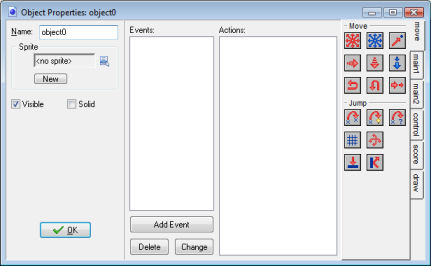

Please realize the difference between sprites and objects. Sprites are just (animated) images that don't have any behavior. Objects normally have a sprite to represent them but objects have behavior. Without objects there is no game!
Also realize the difference between objects and instances. An object describes a certain entity, e.g. a monster. There can be multiple instances of this object in the game. When we talk about an instance we mean one particular instance of the object. When we talk about an object we mean all the instances of this object.
To create an object in your game, choose Create Object from the Resources menu. The following form will appear:

This is rather complex. At the left there is some general information about the object. In the middle there is the list of events that can happen to the object. At the right there are the different actions the object can perform. Events and actions will be discussed in the coming chapters.
As always, you can (and should) give your object a name. Next you can choose the sprite for the object. To this end, click with the left mouse button on the sprite box or the menu button next to it. A menu will pop-up with all the available sprites. Select the one you want to use for the object. If you do not have a sprite yet, you can click the button New to create a new sprite resource and change it. Also, when you select a resource there will be a button Edit here that you can use to change the sprite. This is faster than first finding the resource in the list of resources and then indicating you want to edit it.
Below this there are two check boxes. Visible indicates whether instances of this object are visible. Clearly, most objects are visible, but sometimes it is useful to have invisible objects. For example, you can use them for waypoints for a moving monster. Invisible objects will react to events and other instances do collide with them. The box labeled Solid indicates whether this is a solid object (like a wall). Collisions with solid objects are treated differently from collisions with non-solid objects. You are strongly advised to use Solid only for object that are not moving.
| Converted from CHM to HTML with chm2web Pro 2.85 (unicode) |